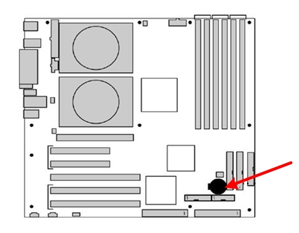
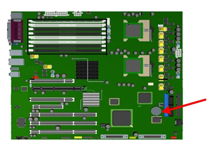
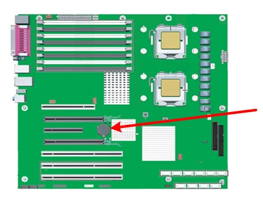
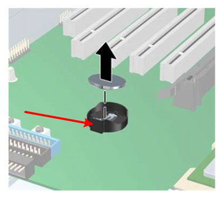

Operating Documentation
Direction 5193574-800, Rev# 22
LightSpeed 7.X Service Methods
Module Version 1.0, Version Date 1/7/13
Operating Documentation |
| Required Persons | Preliminary Reqs | Procedure | Finalization |
|---|---|---|---|
| 1 | 30 mins | 30 mins | 0 min |
This procedure describes the steps necessary to perform HP Computer CMOS Battery replacement. For preliminary requirements and finalization steps see the prescribed Lower Level FRU Replacement procedure for the specific model of HP computer. See Replacement Procedure chapter of the System Service Manual.
| Last Revised: | 14 October 2012 |
| Item | Qty | Effectivity | Part# | Manufacturer | |
|---|---|---|---|---|---|
| BATTERY, TYPE 2032 COIN, 3 VOLT, LITHIUM | 1 | - | 5129534-3 | - | |
| ||||
| System board or component damage could result. | ||||
| The cooling fan is off only when the workstation is turned off or the power cable has been disconnected. The cooling fan is always on when the workstation is in “On” or “Standby” mode. | ||||
| You must disconnect the power cord from the power source before opening the workstation. |
| ||||
| Turn off the workstation before disconnecting any cables. | ||||
| ||||
TO PREVENT DAMAGE TO COMPONENTS WITHIN THE HP COMPUTER, OBSERVE
THE FOLLOWING ESD PRECAUTIONS:
FOR FURTHER INFORMATION REGARDING ESD PROTECTION, REFER TO THE SAFETY CHAPTER IN THIS PUBLICATION | ||||
| Condition | Reference | Effectivity |
|---|---|---|
Power cord must be disconnected from HP Computer and the computer’s PSU drained of all power. Press and hold HP computer’s power switch on the computer’s front panel for approximately 45 seconds after disconnecting the power cord. | - | - |
Perform the following steps before servicing the workstation.
Remove/disengage any security devices that prohibit opening the workstation.
Disconnect all peripheral device cables from the workstation.
Remove workstation access panel cover.
Lay the workstation on its side with the system board facing up.
Locate the battery on the HP computer’s systemboard. Reference the following illustrations for the different HP computer models.
Illustration 1: HP xw8000 Battery Location

Illustration 2: HP xw8200 Battery Location

Illustration 3: HP xw8400 Battery Location

Remove the old battery. Release the battery from its holder by pulling back on the spring clip (shown at arrow).
Illustration 4: Battery Removal

Let the computer sit for 2-3 minutes to allow for the CMOS memory to clear.
Install the new battery. Make certain the spring clip snaps over the battery, holding it in place. The battery’s positive (+) side should be facing upwards.
Reinstall access panel on the workstation.
Reinstall the HP computer in Operator Console and power on the operator console. Follow the prescribed Lower Level FRU Replacement procedure for the specific model of HP computer. See Replacement Procedure chapter of the System Service Manual.
During power up press <F10> as soon as the display is active, the word Setup will appear in the lower right corner of the screen.
Restore customized BIOS Settings for the specific HP computer following these procedures:
Make certain to save BIOS Settings and exit.
Return to respective Lower Level FRU Replacement procedure.
No finalization steps.